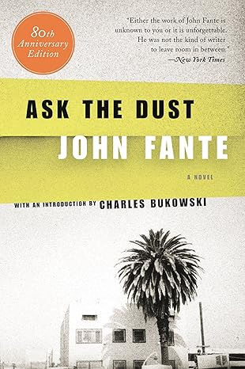

John Fante’s Ask the Dust
Ask the Dust is the great American novel that America forgot. Published in 1939, ignored for forty years, then resurrected by a drunk poet who found it on a library shelf in downtown Los Angeles. It is a book about wanting so badly it makes you cruel. About being young and broke and convinced of your own genius while the city around you could not care less.

I came to John Fante the way most people come to John Fante. Through Bukowski. There is a foreword Bukowski wrote for the Black Sparrow Press reissue in which he describes pulling Ask the Dust off the shelf at the Los Angeles Public Library and reading it standing up, unable to stop. He had spent years searching for a writer who could make him feel something other than cheated. He found Fante. He wrote four words that have followed the book around ever since: “Fante was my god.”
I read that foreword in a hostel in South America, bought the novel the same week from a second-hand bookshop with a crooked sign, and read it in two sittings. I have read it four times since. Each time it gives me something different. The first time it gave me Los Angeles. The second time it gave me Arturo Bandini. The third time it gave me the sentences. The fourth time it gave me the dust.
The man Bandini
John Fante was born in Denver, Colorado, in 1909. His father was an Italian immigrant, a bricklayer who drank and fought and left the family guessing. His mother was Italian American, Catholic, patient in the way that women married to difficult men learn to be patient. Fante grew up poor, educated at Catholic schools, and left Colorado for Los Angeles at twenty-three with nothing but ambition and a suitcase full of manuscripts nobody wanted.
He lived in rooming houses on Bunker Hill. He worked manual labour, canning jobs, whatever paid enough to keep him writing in the evenings. He submitted relentlessly to literary magazines and was rejected relentlessly in return. Then in 1934, H.L. Mencken at The American Mercury accepted a short story called “Altar Boy,” and Fante’s career, such as it was, began.
He published Wait Until Spring, Bandini in 1938 and Ask the Dust in 1939. The same year Steinbeck published The Grapes of Wrath, Chandler published The Big Sleep, and Nathanael West published The Day of the Locust. Fante’s novel disappeared beneath those shadows. It sold poorly. It went out of print. For the next four decades, almost nobody read it.
Then Bukowski found it in the library, and the book got a second life. Fante, by that point, was blind from diabetes. Both his legs had been amputated. He dictated his final novel, Dreams from Bunker Hill, to his wife Joyce from a hospital bed. He died in 1983, aged seventy-four. The city eventually named a square after him, on the corner of Fifth and Grand, outside the library where Bukowski first read him. It is a fitting tribute for a writer whose best work was about wanting to be seen by a city that kept looking through him.
A voice like a fist through glass
What hits you first about Ask the Dust is the voice. Arturo Bandini narrates with the self-conscious bravado of a young man who is terrified of being ordinary. He is twenty years old, Italian-American, a writer with one published story to his name and a belief in his own greatness that is both absurd and completely sincere. He walks the streets of Depression-era Los Angeles talking to himself, to God, to the dust, to anyone who will listen and most of those who will not.
The prose is urgent, physical, swinging between tenderness and cruelty within the same paragraph. Fante writes the way certain people talk when they have been alone too long: fast, loud, veering between confession and performance. Bandini is insufferable and magnetic. He is a fraud who is also telling the truth. You want to shake him and you want to keep reading, which is exactly the point.
This voice is what separates Fante from the Los Angeles writers who surrounded him. Chandler gave the city its noir. West gave it its apocalypse. Fante gave it its hunger. Not metaphorical hunger. Literal hunger. Bandini counts oranges under his bed. He walks past restaurants he cannot afford and watches people eat. The city is beautiful and indifferent and he wants to consume it, but the city is not offering.
Los Angeles as the fourth character
The Los Angeles of Ask the Dust is not the Los Angeles of the movies. There are no swimming pools. No palm-lined boulevards. No Hollywood glamour. Fante’s city is Bunker Hill boarding houses, the downtown library, the Columbia Buffet on Main Street, the long walk to the beach at Long Beach, the Mojave Desert shimmering at the edge of everything.
The city functions in the novel the way Tokyo functions in Norwegian Wood. It is not a backdrop. It is an emotional condition. Bandini’s relationship with Los Angeles mirrors his relationship with himself: desperate, possessive, humiliated, ecstatic. He walks the streets at night because he cannot sleep and because walking is the only thing that costs nothing. The city absorbs him without acknowledging him. The dust settles on everything.
Fante was among the first American writers to see Los Angeles as a literary landscape rather than a geographic one. Stephen Cooper, his biographer, wrote that Fante saw the city with a penetrating, panoramic eye that nobody before him had managed. That eye is what gives the novel its atmosphere: a city that promises everything and delivers heat, dust, and solitude.
Camilla and the cruelty of desire
The love story at the centre of Ask the Dust is one of the most uncomfortable in American literature. Bandini meets Camilla Lopez, a Mexican waitress at the Columbia Buffet, and falls into an obsessive, toxic attraction that neither of them can control or survive. They are drawn to each other and repelled by each other in almost the same breath. The attraction is real. So is the racism, the class anxiety, the mutual contempt that masks mutual need.
Fante does not soften this. Bandini says cruel things about Camilla’s ethnicity. Camilla mocks his poverty, his pretensions, his Italian name. They wound each other precisely because they recognise each other. Two outsiders in a city that belongs to neither of them, using each other as mirrors they cannot stand to look into.
What makes the love story devastating is that Fante refuses to redeem it. Bandini does not learn to be better. Camilla does not save him. She has a breakdown and disappears into the Mojave Desert, and Bandini is left with nothing but his manuscript and the dust. The ending is not tragic in the conventional sense. It is simply unresolved. The desire does not go anywhere. It just stops, the way real desire sometimes does, without explanation or closure, leaving you standing in a room that no longer has anyone in it.
Writing as salvation and wound
Underneath the love story and the city and the hunger, Ask the Dust is a novel about the act of writing itself. Bandini is a writer who believes that writing will save him from poverty, from obscurity, from the feeling of being nobody in a city of nobodies. He is right and wrong simultaneously. Writing does give him a published story, a small amount of recognition, a sense of purpose. But it also isolates him, feeds his narcissism, and gives him a language for self-deception that a less articulate man would not possess.
There is a passage where Bandini receives a letter accepting his story for publication and walks out into the street, believing the whole city can feel his triumph. Nobody notices. The city keeps moving. The gap between the private intensity of the writing life and the public indifference to it is the novel’s deepest wound. Fante understood this because he lived it. He wrote beautifully and almost nobody read him. He spent decades writing screenplays for money while the novels gathered dust on out-of-print shelves. The title is not accidental. Ask the dust. The dust does not answer.
“I was twenty years old and already I was going to write books that would shake the world.”
Ask the Dust is worth reading for its voice alone — the raw, desperate, vain, tender, furious voice of a young man who wants too much and knows too little. It is worth studying for how Fante uses place as emotion, for how the love story refuses to resolve, and for how the prose moves at the speed of a man talking to himself on a night walk through a city that does not know his name. Read it alongside Knut Hamsun’s Hunger, which Fante admired and which shares its subject: a young writer starving in a city, sustained by nothing but the belief that the words will eventually matter. Sometimes they do. Sometimes they are found forty years later on a library shelf by a man who needed them more than anyone.
Flash fiction and prose poetry in the tradition of what you just read. Written on the road. Over 1,200 readers. Free.
Read and subscribe →